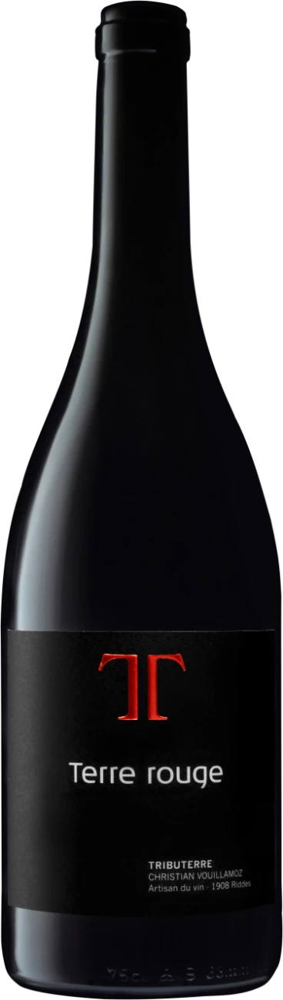
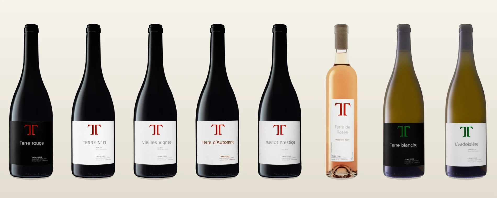

Christian Vouillamoz · Artisan du vin · 1908 Riddes
On ne fait pas du vin pour une marque. On le fait pour une terre que la famille regarde depuis trois générations.
Les vignes poussent sous la paroi de l'Ardevaz, à Leytron. La cave et l'élevage sont à Riddes. Christian Vouillamoz est le premier de la famille à vinifier lui-même la plus grande part de la récolte. Peu de cuvées, faites à la main, en vente directe.
Terre Rouge
Le vin prend toute la place.
Au scroll, la bouteille avance vers l'écran, grandit, puis laisse apparaître les cuvées.

Du rouge à l'orange, une même main
Des rouges de garde aux blancs minéraux, d'un rosé gourmand à un nature en macération : chaque gamme dit la même chose, autrement. Peu de cuvées, beaucoup d'attention.
Tout naît sous la paroi de l'Ardevaz, à Leytron, et s'élève à Riddes, sans précipitation.

Christian vinifie lui-même la plus grande part de la récolte.
Élevage en fûts de chêne, au calme, sans précipitation. Les bouteilles partent en vente directe — pas d'intermédiaire.